Public Economics: Summary#
Table of Contents
Study of Government in our Economy
Main Questions
When should Government intervene?
How?
What is the Effect?
Why do politicians intervene the way they do?
Government Expenditure#
Wagners Law: Government expenditure grows not only in absolute terms, but also in relative to overall economy
Reasons:
Fiscal Illusions
Urbanization
superior goods by Gov
Baumol
Demographic
Baumol Effect: Services = more expensive than goods, Gov provides many services
Theory of Welfare Economics#
Demand#
with indifference curves of Utility Levels
and budget constraint
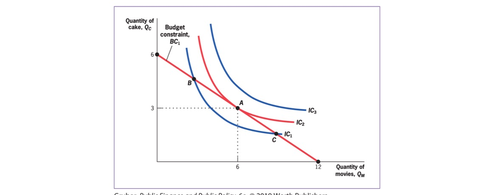
Marginal Utility: increment in utility with one additional unit of good (diminishing)
Marginal Rate of Substitution: Willingness to trade one good for another = Slope of IDC
Price Change Effects: Substitution / Income Effect
Elasticity of Demand: % change in demand due to 1% increase in price
often negative
if infinite = perfectly elastic demand (horizontal)
if 0 = perfectly unelastic (vertical)
Demand for Good at Price: derived from multiple Budget Constraints
Supply#
Supply Curve = outcome of profit maximization
Production Function \(q = \sqrt{K * L}\)
Profit maximization at short term: \(p = MC\)
Equilibrium#
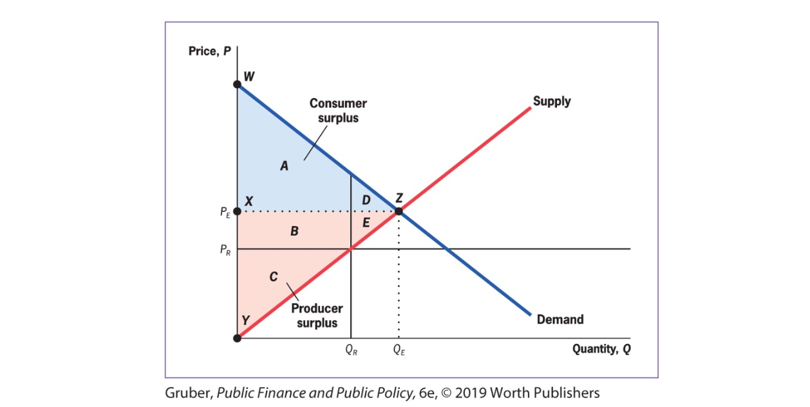
Social Surplus = net gains from trade in society
Consumer Surplus = \(\Delta\) Utility and Price
Producer Surplus = \(\Delta\) Production Cost and Price
Theorems of Welfare Economics
Theorem 1: competetive Equilibrium (where supply = demand) maximizes social efficiency
Theorem 2: society can attain efficient outcome by suitably redistributing resources among individuals + free trade
only under specific conditions!
Empirical Tools#
Correlation vs possible flows of causation
A -> B
B -> A
C -> A & B (third factor)
Bias: source of difference between groups, that is correlated with treatment but not due to t
solved with random assignment in groups
Randomized Control Trials#
2 random groups (treatment & placebo)
Problems
external validity: to other contexts
attrition: reduction of sample size over time (threat to internal validity)
Expense
Observational Data#
Time Series Analysis: Correlation over Time
no spearation of correlation / causation
excluded variables
Cross Sectional Regression: statistical magic
add control variables for better results
regression line for showing
quasi-experiments: change in economic environment create nearly identical groups
often used in Difference in Difference (DiD) Models
have to argument that bias is not relevant in this context
structural modelling: Estimation of Policy Effect on individual decisions (e.g income effects)
structural estimation
reduced form estimates
Externalities#
externality: indirect cost / benefit to uninvolved third party
type of market failure
positive / negative
production / consumption based
consumption: individuals consumptions harms others
production: firms production harms others
= create difference between Social Marginal Cost and Private Marginal Cost
Private Marginal Cost (PMC): direct cost to produce one good
Social Marginal Cost (SMC): PMC + costs imposed on others
Example: 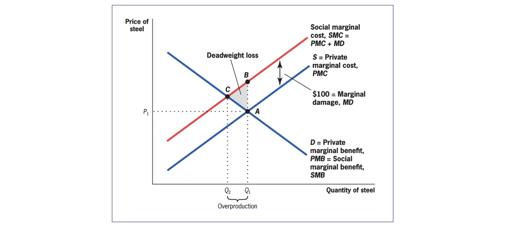
Solution => internalize Externalities
Private Sector Solution#
Coase Theorem: well defined property rights + negotiations => socially optimal market quantity
damaged can demand compensation from damager
does not depend on who owns rights (either damage payment or payment for not damaging)
Problems:
Assignment
Free Rider
Holdouts
Transaction Costs
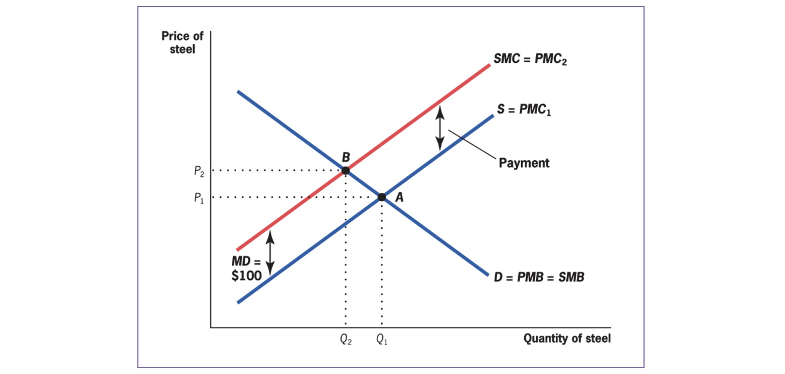
=> only for specific problems!
Public Solutions#
Taxation / Subsidies = price Based approach
pigouvian taxes
align PMC and SMC
for low SMB of Reduction (Co2)
Regulation = quantity based approach
can be complicated
and inefficient
for high SMB of Reduction (nuclear leakage)
right amount of pollution:
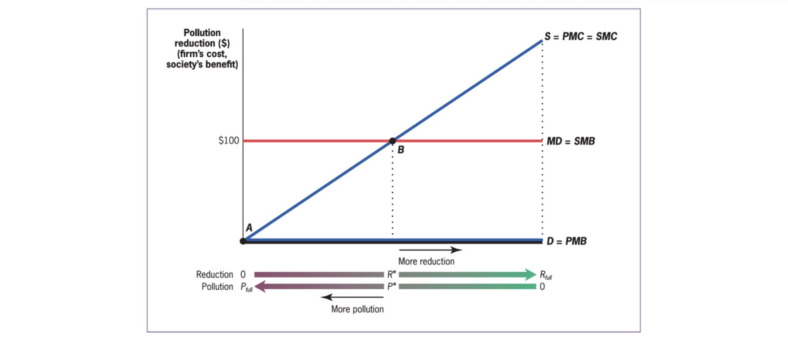
Public Goods#
Types of Goods |
Excludable |
Non-excludable |
|---|---|---|
rival |
private good |
club good |
non-rival |
common good |
public good |
Example: atmosphere as a sink for emissions
Provision: aggregate demands (vertically)
Problems with Public Provision of Goods
Crowd Out
Provision Mechanism
Measuring Costs / Benefites
Measuring Preferences
Cost-Benefit Analysis#
Measuring Costs#
Normal Costs (Capital, Operation, Maintenance)
Opportunity Costs (in imperfect markets)
Disocunting Future Costs to Present Discount Value $\( PDV = \frac{ F_1 }{1+r}+\frac{ F_2 }{(1+r)^2}+\frac{ F_3 }{(1+r)^3}+... \)\( for infinite: \)\frac{ cost_{per year} }{r}$
Measuring Benefits#
Time Savings Measuring
Live Saved Valuation
Methods:
Market Based = wages
survey based
revealed preferences
Example 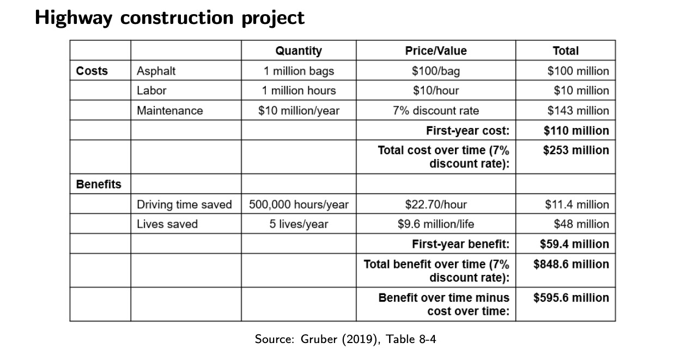
Issues#
Counting Mistakes
Menschenwürde
Uncertainty
Distribution Effects
Alternative: Cost Effectiveness Analysis
Asymmetric Information#
asymmetric Information: different actors have differing levels of information in market
Example: Insurance Market with low risk / high risk people
average price of insurance = too high for low risk, to cheap for others
low risk cannot proof they are low risk
=> market failure and adverse selection
market based solution: pooling equilibrium, separating equilibrium
Problems#
Adverse Selection: market situation where buyers and sellers have different information => unequal distribution of benefits to both parties
=> public insurance with mandatory (e.g Krankenkassen)
Moral Hazard: Adverse actions taben by individuals or producers in response to insurance against adverse outcomes
ex ante: changes in behavior that affect insured risk (smoking => lung cancer)
ex post: after risk has materialized (cancer => want every possible treatment)
=> only partial insurance, not full (e.g Arbeitslosengeld 1)
Inequality#
measureable in Income and Wealth
Graphical Representation:
Lorenz Curve |
Gini Coefficient |
|---|---|
|
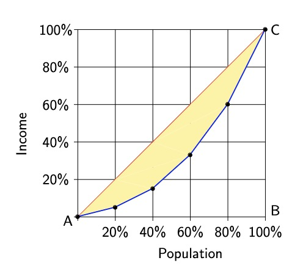 |

Equity Effiency Tradeoff: Societal Decision between these two
Pareto Efficiency: one person better off without making other person worse off
Problem: tyranny of status quo
Welfare Redistribution#
Program Characteristics:
Eligibility
Categorical: restricted to some demographic (e.g Kindergeld)
means-tested: restricted by income (e.g Wohngeld)
many are both: (e.g Bürgergeld)
Type
Cash Welfare
In-Kind (e,g freie Kita)
Leakage in Welfare Programs (Okuns Leaky Bucket)
Administrative Costs
Deadweight Loss of Taxation
moral hazard (of the poor)
Benefit Example $\( B = G-(\tau \times w \times h) \)$
G = maximum benefit
\(\tau\) = reduction rate
\(w\) = wage
\(h\) = hours worked
at \(\tau=0.5\)
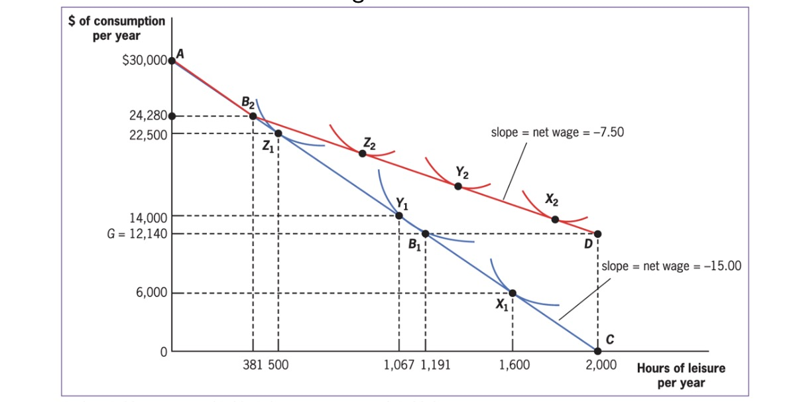
Iron Triangle of Welfare (choose only 2)
encourage work
resdistribute more
lowe costs
Solutions (only partly)
Categorical welfare Systems (compensate for lack of earnings capacity, e.g disabled)
ordeal mechanisms (work requirements etc.)
outside option (higher minimum wage)
Taxation#
General#
Tax (German Law): cash payment without a specific return, mandatory for all
Tax (economics): compulsory levy without a (individual or group-specific) service in return
Goals:
generate Revenue
increase equity
change individual behavior
Effective Tax Rates on Income
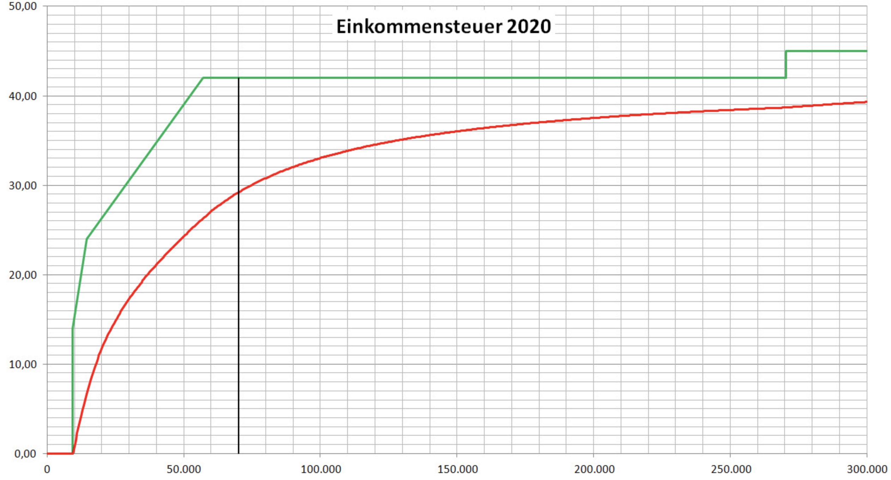
Red = effective Tax, green = marginal tax
marginal tax rate: percentage of the next euro of taxable income paid
effective tax rate: percentage of total income paid
Fairness in Tax System:
Vertical equity: Strong shoulders pay more
Horizontal equity: similar individuals pay equal amounts
Haig Simons Principle#
taxable income = reflect ability to pay
=> deductions for life situations, e.g Pendlerpauschale
but deviations also existent, e.g deduction for charitable giving
to induce crowd in and consumer sovereignty
cost = lost gov revenue
Unit of Taxation#
on what income should taxes be levied? (Family, Marriage, Individual)
Individual
no equity across couples (with same aggregated income, but different shares)
but fair taxation for everybody
Family
income aggregated on family level and taxed
= marriage tax, because shared filing = more expensive
Marriage Splitting
income splitted on 2 members of marriage
and then taxed
disincentivizes work for poorer member of HH
Tax Incidence#
Three Rules
Statutory Burden \(\neq\) economic burden
side of the market = irrelevant
party with inelastic supply = bear taxes
Economic Incidence: burden of taxation measured by change in resources available
statutory incidence: burden borne by party that sends check to gov.
inelastic demand |
elastic demand |
|---|---|
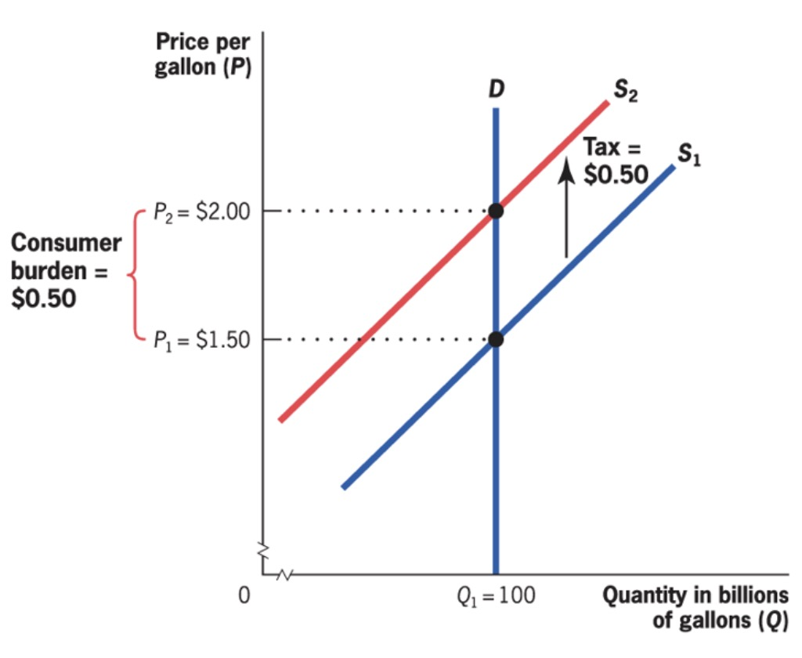 |
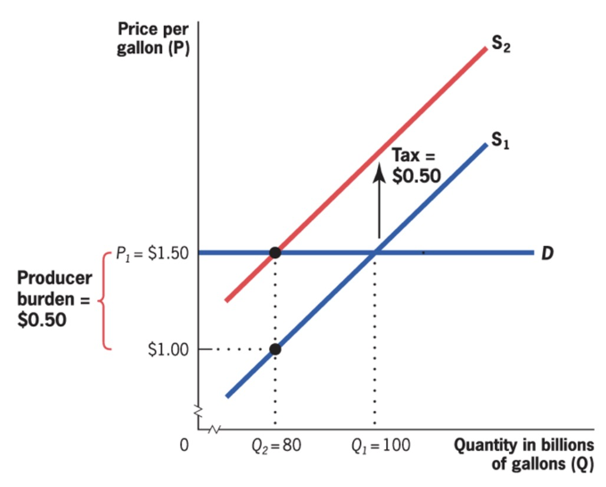 |
burden at consumers |
burden at producers |
gross price: market price
after-tax price: gross price - tax (if producer tax) or + tax (if consumer side)
General Equilibrium Tax Incidence#
until now: only partial equilibrium tax incidence (impact on one market)
General equilibrium tax incidence: Analysis that considers the effects on related markets of a tax imposed on one marke
depends on
long run / short run = shifting elasticities
capital in short run = fixed, bears burden
in long run = more volatile
tax scope = non-taxed substitutes
spill-over effects
income effect = lower real income
substitution effect
complementary effect = reduce consumption of complementary goods (e.g beer tax and snacknuts consumption)
Tax Inefficiency#
Tax System: Trade off between Equity & effiency
Tax = creates Deadweight Loss (DWL), depends on
Elasticities (higher elasticity = higher DWL)
Tax height
marginal DWL: increase in DWL per unit of taxation
Implications for Efficiency:
depends on preexisting distortions
progressive tax = higher DWL
smooth taxes > high short taxes
Optimal Taxation#
for Commodities: by Frank Ramsay: ratio of marginal DWL = marginal Revenue
Formula:
ratio \(\lambda\) = should besame for all goods
Example
increase taxation on B
lower on A
-> elasticity rule: good with higher elast. = lower tax
but not good for equity (caviar = high elast, wheat = low)
for Income:
total income in society = fixed
same utility function
After = everyone same income
Formula: \(\frac{ MU }{MR} = \lambda\) same for all (MR = marginal Revenue)
Debt#
Governemtn Debt: amount gov. borrowed on financial markets
government deficits / surplus: yearly increase / decrease
Types of gov. debt:
Explicit: official debt given out by the financial ministry
implicit: explicit + promised payouts in the future (e.g pensions etc.)
Calculation of implicit debt:
Present Discounted Value:
but:
very hard to calculate
(heroic) assumptions about r and F
=> focus on explict debt!
Effects#
Short Run: Stabilization
Automatic stabilization: automaitc policies e.g unemployment insurance
Discretionary stabilisation: policy actions taken in response (e.g Gaspreisbremse)
= good for the economy
Long Run: Negative?
limited private capital investment
less economic growth due to less private investment
Reality:
depends on capital markets
and what the debt is used for…
=> evidence is inconclusive
Social Welfare Function#
Aggregation of indivudal utilities in Society
Requirements:
indidividualistic
pareto criterion (higher W for pareto-superior distributions)
inequality aversion
=> no correct SWF!